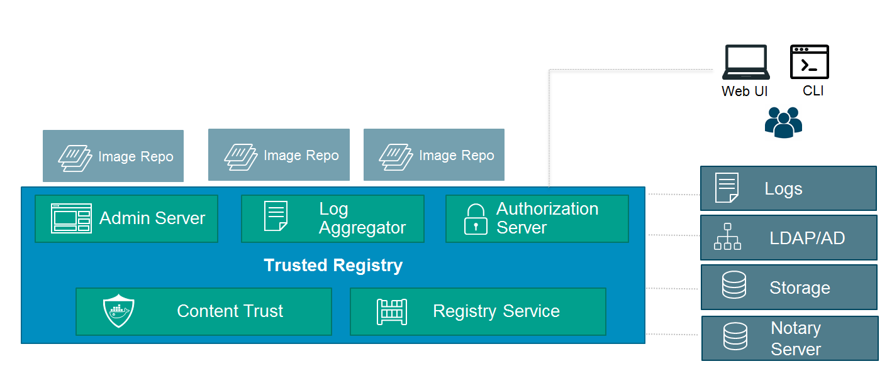

Soft Image Delete = Remove from UI but still on disk
 Task:
Task:
Integrate UCP with DTR
Follow the instructions at https://docs.docker.com/ucp/dtr-integration/ and connect your UCP instance to DTR
Follow the instructions at https://docs.docker.com/ucp/dtr-integration/ and connect your UCP instance to DTR
Docker Trusted Registry (DTR) is a registry server that you can run securely on your own infrastructure

Soft Image Delete = Remove from UI but still on disk
Hard image Delete = Remove unused layers via garbage collection